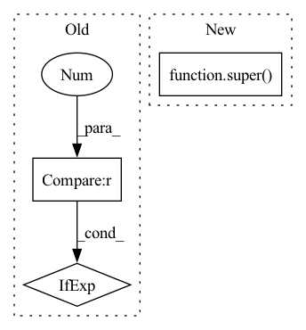

Pattern ID :2660
Before Change
self._update_current_progress_remaining(self.num_timesteps, total_timesteps)
if self.num_timesteps > 0 and self.num_timesteps > self.learning_starts:
gradient_steps = self.gradient_steps if self.gradient_steps > 0 else rollout.episode_timesteps
self.train(gradient_steps, batch_size=self.batch_size)
callback.on_training_end()After Change
eval_log_path: Optional[str] = None,
reset_num_timesteps: bool = True) -> OffPolicyAlgorithm:
return super( SAC, self) .learn(total_timesteps=total_timesteps, callback=callback, log_interval=log_interval,
eval_env=eval_env, eval_freq=eval_freq, n_eval_episodes=n_eval_episodes,
tb_log_name=tb_log_name, eval_log_path=eval_log_path,
reset_num_timesteps=reset_num_timesteps)In pattern: SUPERPATTERN
Frequency: 5
Non-data size: 3
Instances Fragment ID: 10890516
Project Name: dlr-rm/stable-baselines3
Commit Name: 96b771f24e9551e1af20012a25353dc5bd253821
Time: 2020-06-29
Author: n.dormann@gmx.net
File Name: stable_baselines3/sac/sac.py
M Class Name: SAC
N Class Name: SAC
M Method Name: learn(10)
N Method Name: learn(10)
M Parent Class: OffPolicyAlgorithm
N Parent Class: OffPolicyAlgorithm
M File Name: stable_baselines3/sac/sac.py
N File Name: stable_baselines3/sac/sac.py
M Start Line: 257
M End Line: 280
N Start Line: 260
N End Line: 263
Before Change
self._update_current_progress_remaining(self.num_timesteps, total_timesteps)
if self.num_timesteps > 0 and self.num_timesteps > self.learning_starts:
gradient_steps = self.gradient_steps if self.gradient_steps > 0 else rollout.episode_timesteps
self.train(gradient_steps, batch_size=self.batch_size, policy_delay=self.policy_delay)
callback.on_training_end()After Change
eval_log_path: Optional[str] = None,
reset_num_timesteps: bool = True) -> OffPolicyAlgorithm:
return super( TD3, self) .learn(total_timesteps=total_timesteps, callback=callback, log_interval=log_interval,
eval_env=eval_env, eval_freq=eval_freq, n_eval_episodes=n_eval_episodes,
tb_log_name=tb_log_name, eval_log_path=eval_log_path,
reset_num_timesteps=reset_num_timesteps) Fragment ID: 10890514
Project Name: dlr-rm/stable-baselines3
Commit Name: 96b771f24e9551e1af20012a25353dc5bd253821
Time: 2020-06-29
Author: n.dormann@gmx.net
File Name: stable_baselines3/td3/td3.py
M Class Name: TD3
N Class Name: TD3
M Method Name: learn(10)
N Method Name: learn(10)
M Parent Class: OffPolicyAlgorithm
N Parent Class: OffPolicyAlgorithm
M File Name: stable_baselines3/td3/td3.py
N File Name: stable_baselines3/td3/td3.py
M Start Line: 168
M End Line: 193
N Start Line: 170
N End Line: 173
Before Change
self.linear2 = nn.Linear(dim_feedforward, d_model)
self.dropout2 = nn.Dropout(dropout)
self.drop_path = DropPath(drop_path_rate) if drop_path_rate > 0 else nn.Identity()
self.activation = F.gelu
After Change
def __init__(self, d_model, nhead, dim_feedforward=2048, dropout=0.1,
attention_dropout=0.1, drop_path_rate=0.1):
super() .__init__()
self.pre_norm = nn.LayerNorm(d_model)
self.self_attn = Attention(dim=d_model, num_heads=nhead, Fragment ID: 10890515
Project Name: lucidrains/vit-pytorch
Commit Name: cb6d749821bbf3b0bd17c9e8e64eb343f40b3f69
Time: 2022-10-29
Author: lucidrains@gmail.com
File Name: vit_pytorch/cct.py
M Class Name: TransformerEncoderLayer
N Class Name: TransformerEncoderLayer
M Method Name: __init__(7)
N Method Name: __init__(7)
M Parent Class: nn.Module
N Parent Class: nn.Module
M File Name: vit_pytorch/cct.py
N File Name: vit_pytorch/cct.py
M Start Line: 100
M End Line: 111
N Start Line: 121
N End Line: 133
Before Change
// build first step conv 1x1.
self.conv_list.append(ConvBNReLU(in_channels, out_channels // 2, kernel_size=1, bias=False))
// avg pool in skip if stride = 2.
self.skip_step1 = nn.AvgPool2d(kernel_size=3, stride=2, padding=1) if stride == 2 else nn.Identity()
in_channels = out_channels // 2
mid_channels = in_channelsAfter Change
:param stdc_downsample_mode: downsample mode in stdc block, supported `avg_pool` for average-pooling and
`dw_conv` for depthwise-convolution.
super() .__init__()
assert steps in [2, 3, 4], f"only 2, 3, 4 steps number are supported, found: {steps}"
self.stride = stride
self.conv_list = nn.ModuleList() Fragment ID: 10890512
Project Name: deci-ai/super-gradients
Commit Name: 98083d4303f887cb29f39029871612fe5e2e4753
Time: 2022-11-02
Author: 88616312+lkdci@users.noreply.github.com
File Name: src/super_gradients/training/models/segmentation_models/stdc.py
M Class Name: STDCBlock
N Class Name: STDCBlock
M Method Name: __init__(6)
N Method Name: __init__(5)
M Parent Class: nn.Module
N Parent Class: nn.Module
M File Name: src/super_gradients/training/models/segmentation_models/stdc.py
N File Name: src/super_gradients/training/models/segmentation_models/stdc.py
M Start Line: 34
M End Line: 43
N Start Line: 29
N End Line: 53
Before Change
it = it.to(hook)
_map = (
it.map(self.iterate_single_archive)
if max_workers == 0
else it.async_map(self.iterate_single_archive, prefetch_buffer, max_workers)
)
return _map.flatten()After Change
**kwargs: Other keyword arguments passed to :py:meth:`MapDriver.get_iter`.
super() .get_iter(flatten=flatten, **kwargs)
def keys(self, **kwargs) -> Iterable:
Returns the paths of the files in the root directory relative to root. Fragment ID: 10890513
Project Name: merantix-momentum/squirrel-datasets-core
Commit Name: 10905c08740fb6152d5a6e3bddbab927536e861f
Time: 2022-02-24
Author: winfried.loetzsch@merantix.com
File Name: src/squirrel_datasets_core/datasets/monthly_german_tweets/driver.py
M Class Name: MonthlyGermanTweetsDriver
N Class Name: MonthlyGermanTweetsDriver
M Method Name: get_iter(2)
N Method Name: get_iter(4)
M Parent Class: MapDriver
N Parent Class: RecordIteratorDriver
M File Name: src/squirrel_datasets_core/datasets/monthly_german_tweets/driver.py
N File Name: src/squirrel_datasets_core/datasets/monthly_german_tweets/driver.py
M Start Line: 53
M End Line: 81
N Start Line: 54
N End Line: 63